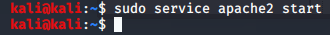

apache2:web server hai

after thgis when u type ipv4 address in browser u get foll page

above was used to run a web page
SO if u wanted to host a malicious web page and make it point back to us :
edit the index.html file or rather keep those files in this folder.

here index.html is the web page
to host a web server:

Due to this when typed http://192.168.50.128:8080/hello.txt in web
u get:

m stands for module so now u dint have to put everything into a var/www folder u can directly do from the terminal
so an alternative to using apache2 to spin up a web server say i wanna spin it in downlaods
so in downlaods type:

and in browser

exercise:spin up ftp server using python
to keep something running forever even after rebooting use systemctl

helps in metasploit and postgresql runing when we boot
basiccally autostart hoga hamesha
coz metasploit takes times to load this fastens